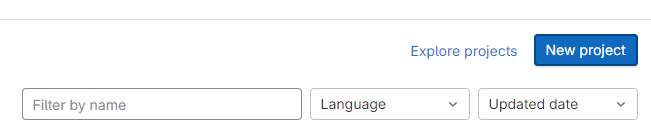
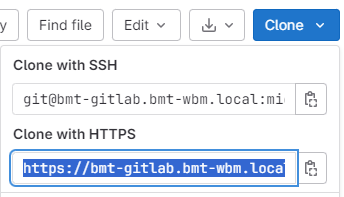
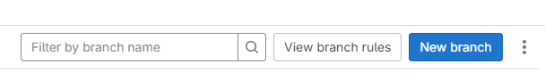
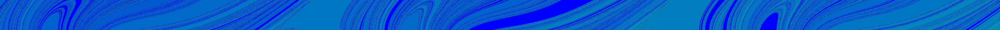

Appendix E — Application under version control
E.1 Context
It is understood that a common use case of TUFLOW CATCH involves multiple modellers with separate but complementary skill sets working on the same TUFLOW CATCH project. For example, a TUFLOW CATCH project might involve:
- A TUFLOW HPC specialist undertaking catchment simulation, and
- A TUFLOW FV specialist addressing receiving waterway simulation
These modellers will need to work quasi-independently for parts of the project, but bring their work together efficiently at a point, or several points throughout the project schedule. TUFLOW CATCH has been deliberately designed to allow for these modellers to work in parallel as the project unfolds, and most importantly, to both work from the same TUFLOW CATCH control file: different users should not need to set up and work from different TUFLOW CATCH control files of the same model. It also goes without saying that TUFLOW HPC and TUFLOW FV modellers should never set up individual *.tcf and *.fvc control files and attempt to construct their models disjointedly in the hope of manually combining models together under TUFLOW CATCH at some future point: both should undertake all set up works from a single TUFLOW CATCH *.tcc control file. Given this, the question arises as to how this is to be managed from a file control perspective. This is discussed in the following sections.
E.2 Use case
The use case considered here as an example of using version control is the Integrated TUFLOW CATCH configuration, with one modeller working on the TUFLOW HPC calibration, and a different modeller working on the TUFLOW FV calibration. TUFLOW makes no recommendation as to which (of the many available) versioning platforms should or could be used. For the purposes of this example, Git (on Windows) is used, with no intent of endorsement.
E.3 Possible workflow #1
The following is a possible workflow for the two modellers delivering the use case described above, working largely independently until recombination of their work into an overall TUFLOW CATCH simulation. Alterations to this are expected to be required on a case by case basis, and one such example is presented subsequently as a second workflow in Section E.4.
The steps below assume an introductory level of knowledge of Git commands and processes, and are not intended to be exhaustive. Users should familiarise themselves with basic Git protocols and concepts before reviewing the below. For example, users should appropriately configure their .gitignore file, and be familiar with commands such as git log and git status to keep track of their work.
- Preliminaries
- Install Git. See https://git-scm.com/book/en/v2/Getting-Started-Installing-Git
- Ensure at least one user already has the relevant account and sufficient permissions to create a new Git project in a web interface
- Project initiation
- Use the TUFLOW CATCH QGIS plugin (see Section 4.3) to generate the folder structure and template files for a TUFLOW CATCH simulation. This can be created in any location because it will be subsequently moved
- Create a new Git project via the web interface of either GitHub or GitLab - TUFLOW makes no recommendation in this regard. This is often achieved via clicking a blue button and filling out some high level project details. The project will have one branch, assumed to be called ‘main’ for the purposes of this example

- Once created, and also from the web interface, copy the address that allows cloning of the new project via https. This is often achieved through a drop down menu on a button marked ‘Clone’, such as the below (the blue highlighted text is to be copied)

Open a new DOS command prompt and navigate to a location where modelling is to be undertaken, preferably under a folder called ‘Modelling’
Clone the new Git project to the Modelling folder, by typing the following, pasting the https address copied above in the
<placeholder>locationgit clone <placeholder>
An example might look like the following. A new folder under Modelling will be created named the same as the Git project name (in this case, ‘catch-demo’). It is this lower folder that is the git project:
git clone https://xx-gitlab.yy-zz.local/user.last/catch-demo.git
Change directory into the cloned folder (using the name of the project, in this case ‘catch-demo’)
cd catch-demoCopy the TUFLOW CATCH folder structure created above into this project directory (
Modelling\catch-demoin this example), either through windows explorer or the DOS promptIn the DOS command prompt whilst in the catch-demo directory, add the new files to a Git commit by typing:
git add . git commit -m "First commit"Push the new commit back up to the Git web interface
git push
The project created earlier is now populated with vanilla TUFLOW CATCH template files, both locally and in the web repository.
- Update files
Modify template files locally to set up overall TUFLOW CATCH simulation with common commands (e.g. project etc) and save files
Commit changes and push
git add . git commit -m "Populates initial TUFLOW CATCH files for branching" git push
- Create branches
- In the web interface, which now has the “Populates initial TUFLOW CATCH files for branching” commit present, create a new branch from main for the TUFLOW HPC modeller. This is often achieved via clicking a blue button. Call the branch
HPCwhen prompted for a name. Create this new branch from main
- In the web interface, which now has the “Populates initial TUFLOW CATCH files for branching” commit present, create a new branch from main for the TUFLOW HPC modeller. This is often achieved via clicking a blue button. Call the branch

- In the web interface, create another new branch from main for the TUFLOW FV modeller in the same way. Call the branch ‘FV’ when prompted for a name. Create this new branch from main
The Git project now has the branches it needs: main for the final TUFLOW CATCH model; HPC for the TUFLOW HPC modeller; and FV for the TUFLOW FV modeller. This allows for the individual modellers to develop their models independently, but from the same commit. The intention is that these files will be merged back into main on completion to form the TUFLOW CATCH simulation suite.
The TUFLOW HPC and TUFLOW FV modellers can now work on different branches, in parallel, with a view to merging their work back into the main branch on completion.
- The TUFLOW HPC modeller now:
Opens a DOS command prompt and navigates to the directory to be used for modelling. This can be anywhere and does not need to be related to the TUFLOW FV modeller’s work
Following the steps above, clones the project
git clone https://xx-gitlab.yy-zz.local/user.last/catch-demo.git cd catch-demoOnce in the catch-demo (or project) directory it is essential that the TUFLOW HPC modeller not work in the ‘main’ branch, but work in the ‘HPC’ branch. As a warning, the ‘main’ branch will most likely be set as the default branch for the modeller to work in when the project is first cloned, so this needs to be changed manually. This requires the TUFLOW HPC modeller to check out the HPC branch by typing:
git checkout HPCThe TUFLOW HPC modeller should then begin construction of the TUFLOW HPC model through the TUFLOW CATCH *.tcc control file in this HPC branch, noting:
Set up and execution of the TUFLOW HPC model should only occur through the *.tcc file. The modeller should never create a *.tcf file
References to boundary database files etc, should point into the TUFLOW directory structure from the *.tcc, for example
Geometry Control File == ..\..\TUFLOW\model\Demonstration_001.tgcThe TUFLOW CATCH simulation should use the [TUFLOW HPC calibration only] or Pollutant Export configuration with a downstream polygon as a placeholder for the TUFLOW FV mesh. This does not involve making any changes to the Receiving Model block of the *.tcc (which will be modified by the TUFLOW FV modeller)
At key stages of construction, the TUFLOW HPC modeller should stage, commit and push changes to the web project
git add . git commit -m "A useful commit message" git push
When construction is finished, the TUFLOW HPC modeller is ready to merge into the main branch to populate the overall TUFLOW CATCH simulation
- In parallel with the TUFLOW HPC works, the TUFLOW FV modeller:
Opens a DOS command prompt and navigates to the directory to be used for modelling. This can be anywhere and does not need to be related to the TUFLOW HPC modeller’s work
Following the steps above, clones the project
git clone https://xx-gitlab.yy-zz.local/user.last/catch-demo.git cd catch-demoOnce in the catch-demo (or project) directory it is essential that the TUFLOW FV modeller not work in the ‘main’ branch, but work in the ‘FV’ branch. As a warning, the ‘main’ branch will most likely be set as the default branch for the modeller to work in when the project is first cloned, so this needs to be changed manually. This requires the TUFLOW FV modeller to check out the FV branch by typing:
git checkout FVThe TUFLOW FV modeller should then begin construction of the TUFLOW FV model through the TUFLOW CATCH *.tcc control file in this FV branch, noting:
Set up and execution of the TUFLOW FV model should only occur through the *.tcc file. The modeller should never create an *.fvc file
References to boundary, geometry and files etc, should point into the TUFLOWFV directory structure from the *.tcc, for example
Geometry 2D == ..\..\TUFLOWFV\model\geoDemonstration_001.2dmThe TUFLOW CATCH simulation should use the TUFLOW FV calibration only configuration. This does not involve making any changes to the Catchment Hydraulic Model block of the *.tcc (which will be modified by the TUFLOW HPC modeller)
At key stages of construction, the TUFLOW HPC modeller should stage, commit and push changes to the web project
git add . git commit -m "A useful commit message" git pushWhen construction is finished, the TUFLOW FV modeller is ready to merge into the main branch to populate the overall TUFLOW CATCH simulation
- The TUFLOW HPC modeller now:
The HPC and FV branches can be merged into the main branch to generate the overall TUFLOW CATCH simulation
- Because the modellers have been working in separate blocks of the *.tcc, and populating separate folder structures for base data (
..\TUFLOW\and..\TUFLOWFV\), conflicts should be minimal - Free packages such as Winmerge can be used to assist with this process. This is a suggestion only and not an endorsement of Winmerge by TUFLOW
- Because the modellers have been working in separate blocks of the *.tcc, and populating separate folder structures for base data (
E.4 Possible workflow #2
The following is a possible addition to the workflow presented in Section E.3 for the two modellers delivering the same use case. Instead of the modellers working entirely independently until post calibration, it includes occasional provision of interim catchment inflows from the TUFLOW HPC modeller to the TUFLOW FV modeller to assist in calibration of the latter under wet conditions. This is accomplished by:
Merging sufficiently complete HPC and FV branches into the main branch to produce a TUFLOW CATCH Integrated configuration simulation from time to time, instead of only at the end of individual calibration tasks
Executing TUFLOW CATCH in Integrated configuration to produce all spatially and temporally resolved boundary inflows for TUFLOW FV
Add, commit and push the boundary files to the main branch
Copy the boundary files (including header blocks (.fvcatchbc) and data files (.csv)) to the
\TUFLOWCATCH\bc_dbase\folder in the FV branch being used by the TUFLOW FV modeller for subsequent accessRename the *.fvcatchbc file to be the same as the TUFLOW FV modellers *.tcc file name so that it is automatically found by the current *.tcc simulation
Rerun the TUFLOW FV modeller’s *.tcc simulation, adding the command below inside the Receiving Model block so that blank catchment boundary files (the default) are not produced and so do not overwrite those developed in the above Integrated TUFLOW CATCH simulation
Preserve Catchment Inflows == ON
The TUFLOW FV modeller can then continue the calibration process with revised inflows. The above process can be repeated at intervals that suit the modelling project and timelines.
Once complete, the HPC and FV branches can be finally merged, and the full TUFLOW CATCH simulation executed
